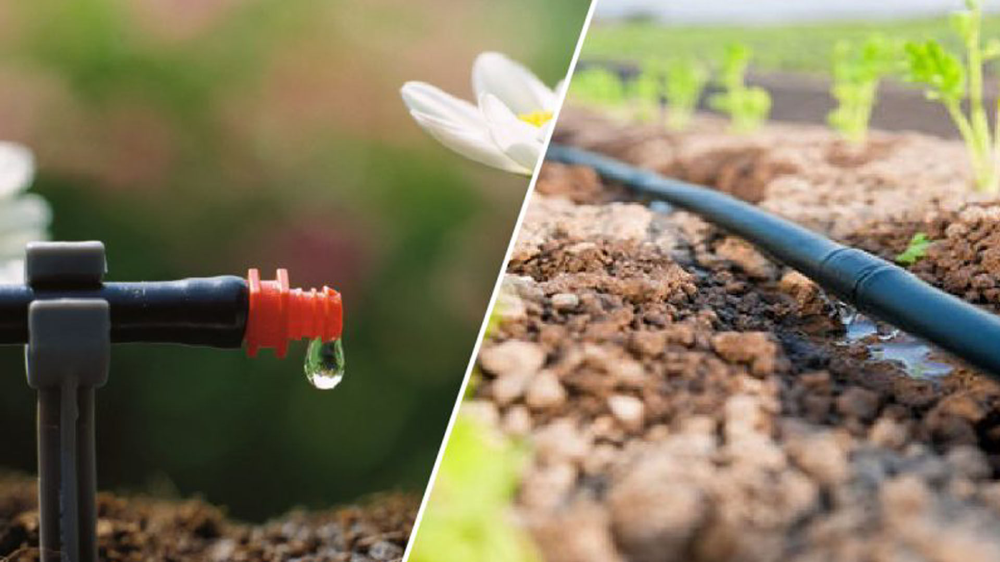

รูปที่ 1 และ 2
หมายเหตุ. จาก https://www.svgroup.co.th/blog/มาใช้ระบบน้ำหยด
รูปที่ 3
หมายเหตุ. จาก https://www.technologychaoban.com/agricultural-technology/article_26710
รูปที่ 4
หมายเหตุ. จาก https://stmarys-wxm.co.uk/about-us/headteachers-welcome/
รูปที่ 5
หมายเหตุ. จาก https://www.pinterest.com/pin/584693964116130723/
รูปที่ 6
หมายเหตุ. จากhttp://www.industry.in.th/dip/productdetails.php?id=175327&uid=50572
รูปที่ 7
หมายเหตุ. จาก https://www.railungtop.com/รายละเอียด/วิธีการปลูกถั่วฝักยาว
รูปที่ 8
หมายเหตุ. จาก https://adeq.or.th/มะระ
รูปที่ 9
หมายเหตุ. จาก https://th.pngtree.com/freepng/fresh-and-refreshing-cucumber-dip_5562422.html
รูปที่ 10
หมายเหตุ. จาก http://ftiebusiness.com/shop4/product-detail.php?id=144895%20&uid=47571
รูปที่ 11
หมายเหตุ. จาก https://www.pngegg.com/th/search?q=ข้าวโพด
รูปที่ 12
หมายเหตุ. จาก https://th.depositphotos.com/111674042/stock-photo-cassava-isolated-on-a-white.html

รูปที่ 13
หมายเหตุ. จาก https://www.pngarts.com/th/explore/108522
ขอขอบคุณมา ณ ที่นี้ค่ะ